画面は 13 枚。
覚えることは 3 か所 だけ。
Multi-Taktika の画面は、上端の 資源、右端の 戦域スロット、下端の コマンド の 3 か所を見るだけで成立します。
残りの画面は、その 3 か所に入れる中身を決めるための画面です。
この資料では、起動から試合後の振り返りまで全 13 画面を並べ、番号ごとに「そこが何を意味するか」を説明します。
1. 画面の全体像SCREEN MAP
画面は 試合前（4 枚）・試合中（7 枚）・試合後（2 枚） に分かれます。
試合中の 7 枚のうち、常に表示されているのは 対戦画面 だけで、
残りは対戦画面の上に重なるパネル（オーバーレイ）です。どのパネルを開いても試合は止まりません。
試合前
タイトル遊び方を選ぶ
▶
対戦設定マップ・人数・AI
▶
文明選択8 文明から 1 つ
▶
キャンペーン章とミッション選択
試合中
対戦画面常時表示。ここが本体
⇄
戦域指令ビュー全戦線の俯瞰
⇄
令カードパネル戦域に方針を渡す
生産・建設パネル対象を選ぶと下端に出る
⇄
学舎研究ツリー
⇄
市場資源交換・交易
⇄
前線ズーム直接操作する時の見え方
試合後
結果勝敗と戦績
▶
リプレイ・観戦戦域単位の振り返り
設計方針：HUD の位置は全画面で固定です。資源は必ず上端左、戦域スロットは必ず右端、選択対象とコマンドは必ず下端。
「複数の戦線を同時に見る」ゲームなので、目線の移動先を毎回同じにする ことを最優先にしています。
2. タイトル画面TITLE
起動直後の画面です。背景は 環海（かんかい） と、中央の島に立つ 碑（いしぶみ）。この世界の技術進歩の源であり、時代進化の演出にも出てきます。
▲ タイトル画面。メニューは 4 項目に絞り、初回起動時は最上段が光ります。
- ロゴ — 紋章は前回選んだ文明のものに変わります。セーブデータがない場合は無地。
- 碑と環海 — 背景は静止画ではなく、時刻とともに空の色が変わります。世界観の導入も兼ねています。
- メニュー — 上から キャンペーン／スカーミッシュ／オンライン／リプレイ。続きがある場合は最上段が「つづきから」に変わります。
- 補助ボタン — 設定（音量・言語・キー割当）とクレジット。アカウント登録は不要なので、ログイン項目はありません。
3. 対戦設定画面MATCH SETUP
スカーミッシュとオンライン対戦で共通の画面です。URL を共有するだけで他の人がこの画面に入ってきます。
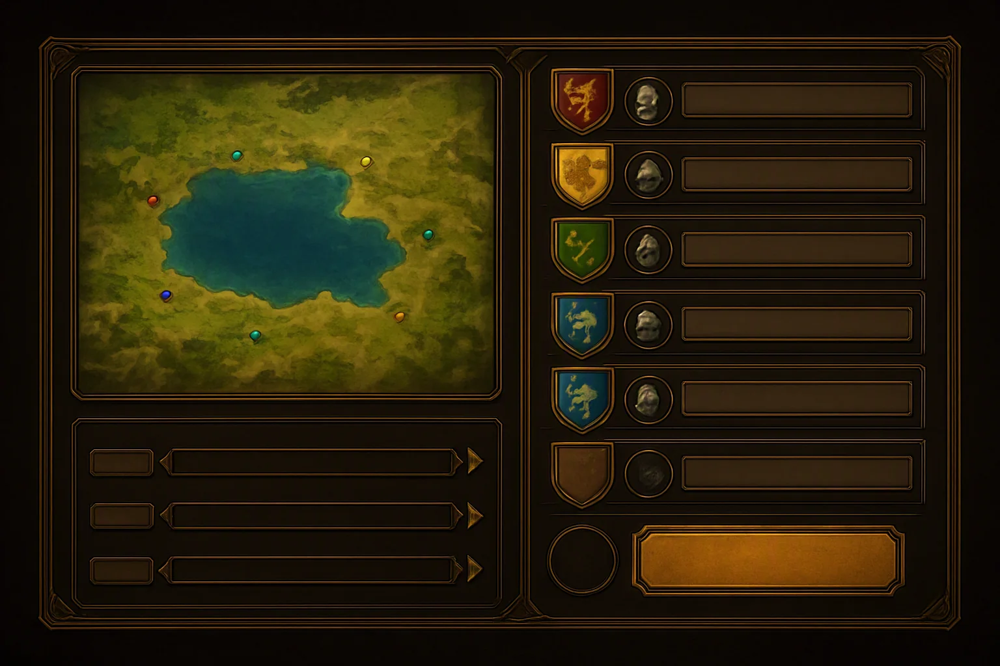
1
2
3
4
5
6
7
▲ 対戦設定画面。左がマップ、右が参加者。最大 8 人（1 対 1 〜 4 対 4）。
- マップ preview — 地形の縮図。水域が広いマップほど港と船の価値が上がります。
- 開始位置 — 色付きの点が各プレイヤーの初期拠点。隣が誰かで、序盤に立つ戦域の場所が決まります。
- 参加者スロット — 名前・チーム色・選んだ文明の紋章が並びます。
- 種別アイコン — 人型は人間、兜は AI。AI は 5 段階で、最上位はプレイヤーと同じく戦域指令で戦ってきます。
- 空きスロット — 「＋」で AI を追加、または他の人の参加を待ちます。
- 試合設定 — 開始時代・開始資源・ゲーム速度・人口上限。開始時代を上げると内政フェーズを飛ばして戦域指令の練習ができます。
- 準備完了 — 全員が押すと開始。押した人のスロットが金色になります。
4. 文明選択画面CIVILIZATION SELECT
文明は見た目替えではなく、固有ユニット・内政ボーナス・固有の令 の 3 点セットです。
さらに 持っていない兵種 があるので、ここでの選択がそのまま勝ち筋の選択になります（詳細は 文明と進化）。
▲ 文明選択画面。紋章を選ぶと右側が総大将と主力兵に差し替わります。
- 紋章グリッド — 8 文明。左上から ヤマト／唐／ローマ／ヴァイキング／マリ／アステカ／ペルシア／モンゴル。
- 選択中の紋章 — 金枠で光ります。オンラインでは他の人が選んだ紋章に相手のチーム色が付きます。
- ランダム枠 — 最後の枠は無作為選択。相手に読ませないための枠です。
- 総大将 — 選んだ文明の見た目の確認用。この時代の装備をそのまま着ています。
- 主力兵サムネイル — 近接・遠隔・騎兵の代表。枠が暗いものはその文明が持たない役割です（例：アステカとヴァイキングの騎兵）。
- ボーナスと固有令 — 内政ボーナス 1 行と、戦域指令のスロットに追加される固有令 1 枚。
5. キャンペーン章選択画面CAMPAIGN
全 4 章・各 5 ミッション。負けてもゲームオーバーにならず、服属した状態から始まる分岐ルートに進みます。そこで勝てば旗を戻して本線に復帰できます。
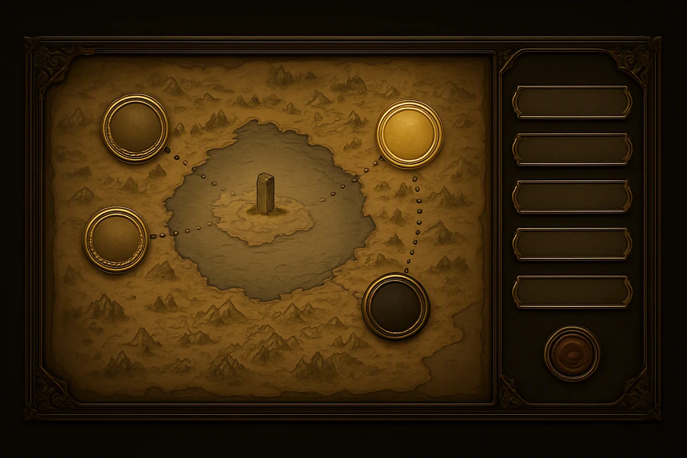
1
2
3
4
5
6
7
▲ キャンペーン章選択。羊皮紙の環海図に、章のメダルが時代順に並びます。
- 達成した章 — メダルが暗い金。分岐した側のルートも記録として残ります。
- 現在の章 — 明るく光っているメダル。章＝時代に対応します（黎明 → 青銅 → 鉄器 → 帝国）。
- 未開放の章 — 黒いメダル。前の章のミッションを 1 つ以上クリアすると開きます。
- 進路 — 点線。分岐に入ると点線が二股に分かれ、負けた側の道も描かれます。
- 碑の島 — 章が進むごとに碑の解読部分が増えていく演出が入ります。
- ミッション一覧 — 5 枚のプレート。未挑戦・クリア・分岐後の再挑戦がアイコンで分かります。
- 出撃 — 封蝋のボタン。押すと対戦画面に入ります。
6. 対戦画面（本編）MAIN GAMEPLAY
試合中の 95% はこの画面です。斜め見下ろしの高精細 2Dで、上端・右端・下端に HUD、中央が戦場。
ここだけは番号を多めに振ってあります。
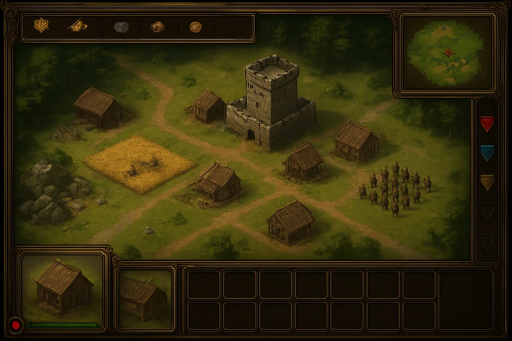
1
2
3
4
5
6
7
8
9
10
11
12
▲ 対戦画面。鉄器の世・戦域が 3 つ立っている状態。番号は下の一覧に対応します。
※ 下の一覧の項目にカーソルを乗せると、画像上の番号が光ります。
- 資源表示 — 左から 食料・木材・石材・金。数字の下に細い増減バーが出て、毎分の収入が分かります。
- 人口 — 現在／上限。家 1 軒で +5、町の中心で +10、上限 200。上限に当たると生産ボタンが赤くなります。
- ミニマップ — 自軍が明るい点、敵が赤、戦域は色付きの輪で出ます。クリックで視点移動。
- 戦域スロット（点灯） — 進行中の戦域。この列がこのゲームの心臓部です。旗の色がミニマップと戦場の輪の色に対応します。
- 戦域スロット（空き） — 使える枠数は時代で増えます（黎明 1 → 青銅 2 → 鉄器 4 → 帝国 6）。城 1 棟か研究「旗竿」で +1（上限 6）。
- 選択中の対象 — 建物やユニットの絵と名前。複数選択時は先頭の 1 体。
- 体力バー — 緑→黄→赤。建物は修理で戻り、石壁の穴だけは戻りません。
- 選択一覧 — 複数選択したときの内訳。種類ごとにまとまるので、槍兵だけを抜き出す等ができます。
- コマンドグリッド — 選択対象にできること。村人なら建設一覧、兵舎なら生産一覧、町の中心なら村人と時代進化。条件を満たさないボタンは暗くなり、足りない資源のアイコンだけが赤く出ます。
- 生産キュー — 最大 5 件。進捗はリングで表示。右クリックで取り消し（資源は全額戻ります）。
- 戦場ビュー — 斜め見下ろし。地形の明暗が視界の有無を示し、暗い場所は「以前見た情報」です。
- 部隊 — 隊列を組んで表示されます。戦域に属している部隊は足元の輪がその戦域の色になり、令に従って自律的に動きます。
この画面の見方のコツ：
左上（資源）は「次に何を作れるか」、右端（戦域スロット）は「今どこで戦っているか」、下端（コマンド）は「今選んでいる物に何ができるか」。
警告は画面の縁に赤いバッジで出るので、戦場を見ていなくても押されていることに気づけます。
7. 戦域指令ビューMULTI-FRONT COMMAND
本作の中核画面です。キー 1 つで対戦画面から切り替わり、全戦線を一枚に俯瞰します。
ここでやることは操作ではなく判断だけ ―― どの戦域を捨て、どの戦域に増援を送るか です。
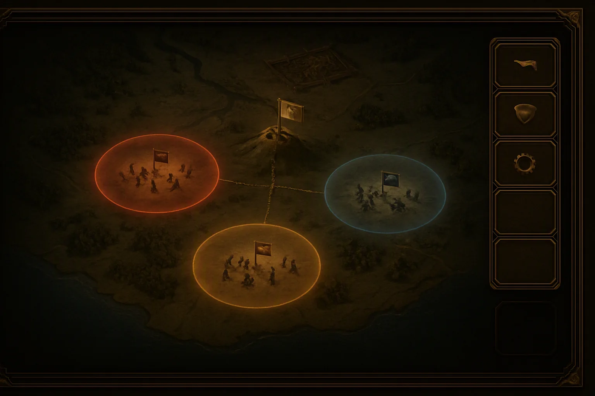
1
2
3
4
5
6
7
8
▲ 戦域指令ビュー。3 つの戦域（赤・青・黄）が立ち、それぞれに令が 1 枚ずつセットされています。
- 戦域（赤） — 戦闘が起きた場所は自動でマーキングされ、独立した小さな戦場として進行します。輪の太さが優勢・劣勢を表します。
- 戦域（青） — 同時に最大 6 つまで発生。輪の中の兵は、渡した令に従って自律的に戦い続けます。
- 戦域（黄） — 輪が点滅し始めたら「負け始めている」合図。増援か、後退か、捨てるかを決めます。
- 本陣 — 総大将のいる丘。ここは動きません。本陣から遠い戦域は令が届くまで時間がかかります。
- 令の伝達線 — 点線が本陣から各戦域へ伸びます。切り替え直後は線が流れ、届いた瞬間に実線になります。研究「復唱」「早馬」で短縮。
- 令スロット（セット済み） — 各戦域に 1 枚。帝国の世の研究「二重旗」で 1 戦域に 2 枚まで重ねられます。
- 空きスロット — 枠が余っていても、戦域が立っていなければ使えません。
- 敵拠点 — 攻め込む先。ここに戦域を立てると攻城戦になります。
8. 令カードパネルTAKTIKA CARDS
戦域を選ぶと開くパネルです。令（れい） はこの世界の総大将が戦線に渡せる唯一のもので、
短くて誤解のない方針が一語だけ。ゲーム上は 1 枚のカードです。
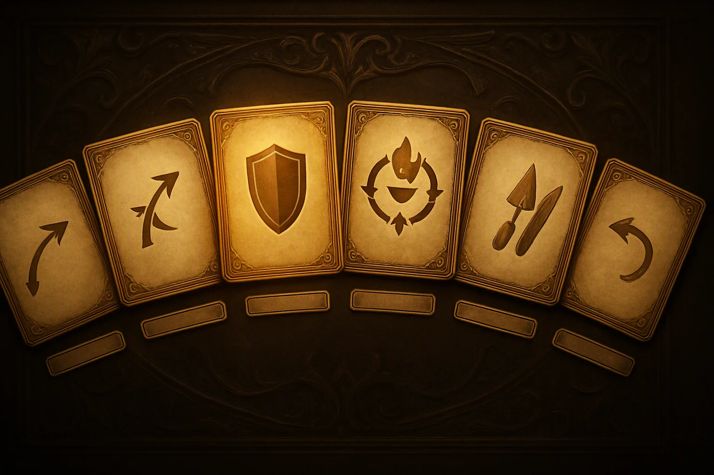
1
2
3
4
5
6
7
8
▲ 令カードパネル。基本 6 枚＋文明固有 1 枚。キーボード 1〜6 に対応します。
- 突撃 — 最も近い敵に向かって前進し続ける。数で押し切れると読んだとき。
- 包囲 — 攻城兵器を前に出し、歩兵で護衛する。城・塔を落としたいとき。直接操作なら 4〜5 手かかる動きが 1 枚で回り続けます。
- 死守 — 指定地点から離れず迎撃に専念する。時間を稼いで進化を通したいとき。
- 略奪 — 敵の村人と資源施設を優先して狙う。相手の内政を折る、または守備兵を引き剥がす囮に。
- 建設 — 村人が防壁・塔を前線に建て進める。戦線を押し上げて固定したいとき。
- 後退 — 損害を避けつつ最寄りの拠点まで下がる。捨てる戦域を決めたとき。
- 選択中のカード — 光って前に出ます。切り替えは即時ではなく、本陣からの距離ぶんの遅延があります。
- 名前プレート — 文明固有の令はここに金の縁が付きます（モンゴル「遊撃」、ローマ「方陣」など）。
9. 生産・建設パネルPRODUCTION PANEL
対戦画面の下端そのものです。何を選んでいるかでボタンが丸ごと入れ替わるため、この 1 か所が内政のすべてを担います。
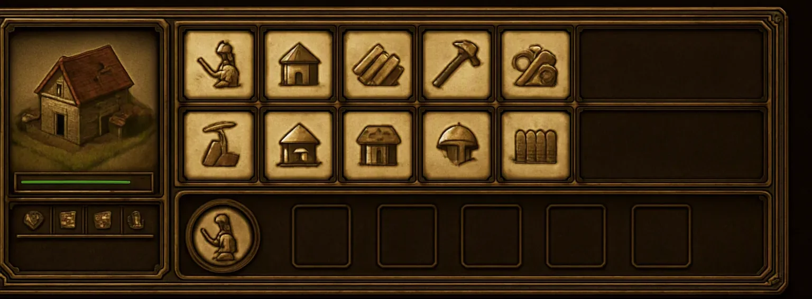
1
2
3
4
5
6
7
8
▲ 町の中心を選んだ状態。村人と時代進化、そして黎明の世に建てられる建物が並びます。
- 選択中の対象 — 絵・名前・その文明での呼び名。同じ「兵舎」でも文明ごとに見た目が変わります。
- 体力バー — 建設中は建築の進捗を兼ねます。
- 属性アイコン — 攻撃・防御・射程・視界。研究で伸びた分は金色で加算表示されます。
- コマンドグリッド（上段） — 村人・家・農地・伐採所・採掘場など、内政の建物。
- コマンドグリッド（下段） — 兵舎・射場・市場・鍛冶場など、時代が上がると解禁される建物。
- 暗いボタン — 条件を満たしていない項目。時代不足・資源不足・その文明が持てないものの 3 種類があり、理由がカーソルを乗せると出ます。例：ヴァイキングとモンゴルの厩は永久に暗いままです。
- 生産中 — リングが一周すると 1 体完成。前線の兵舎で作れば、増援がそのまま戦域に合流します。
- 生産キュー — 最大 5 件。ローマの固有研究「軍団編成」だけ 10 件になります。
10. 学舎（研究）画面TECHNOLOGY
研究は 2 系統です。鍛冶場が「兵の質」、学舎が「指揮の質」。
後者は兵を強くせず、令の通りを良くする 研究で、本作でいちばん重要な枝です。
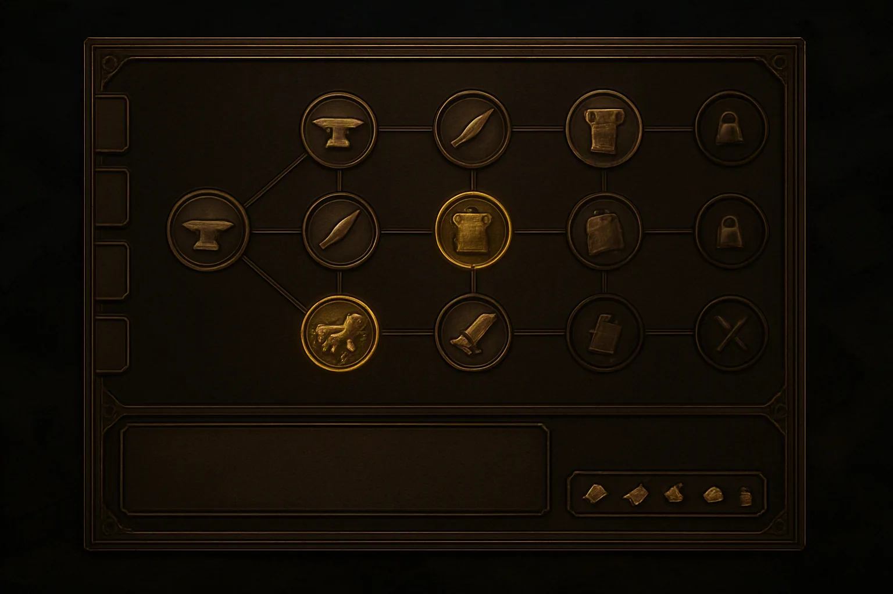
1
2
3
4
5
6
7
8
▲ 研究画面。左のタブで系統を切り替え、右へ進むほど後の時代の研究になります。
- 系統タブ — 鍛冶場／学舎／採集（伐採所・採掘場・農地）／その他（市場・港・城）。
- 起点 — その系統の最初の研究。建物を建てていない系統のタブは暗く、開けません。
- 研究済み — 金色に塗られたメダル。効果は累積するので、同じ枝の 2 段目・3 段目が重要になります。
- 研究可能 — 縁が光っているメダル。クリックすると即座に開始します。
- 未解禁 — 暗く、錠が付いたメダル。時代不足か、その文明が研究できない項目です（例：アステカの鉄鎧系）。
- 前提線 — 枝の親子関係。飛び越して研究することはできません。
- 説明プレート — 効果と、それが効く場面。学舎の研究には「どの局面で効くか」を明記しています。
- 必要資源と時間 — 4 資源のアイコンと秒数。研究中も内政と戦闘は止まりません。
学舎で並ぶもの（抜粋）
| 研究 | 効果 | 画面上での見え方 |
|---|
| 旗竿 | 戦域スロット +1 | 右端の空きスロットが 1 つ増える |
| 早馬 | 令の切り替え待ち −30% | カード切り替え時の砂時計が短くなる |
| 復唱 | 令が届くまでの遅延 −50% | 伝達線の点線が流れる時間が半分になる |
| 二重旗 | 1 戦域に令を 2 枚 | スロットが上下 2 段に割れる |
| 徴兵令 | 全兵の生産速度 +25% | 生産キューのリングが速く回る |
11. 市場（資源交換）画面MARKET
余った資源を足りない資源に替える窓口です。「今どれが足りないか」がそのまま次の一手になる 設計なので、この画面は詰まりを解消するための逃げ道として置いています。
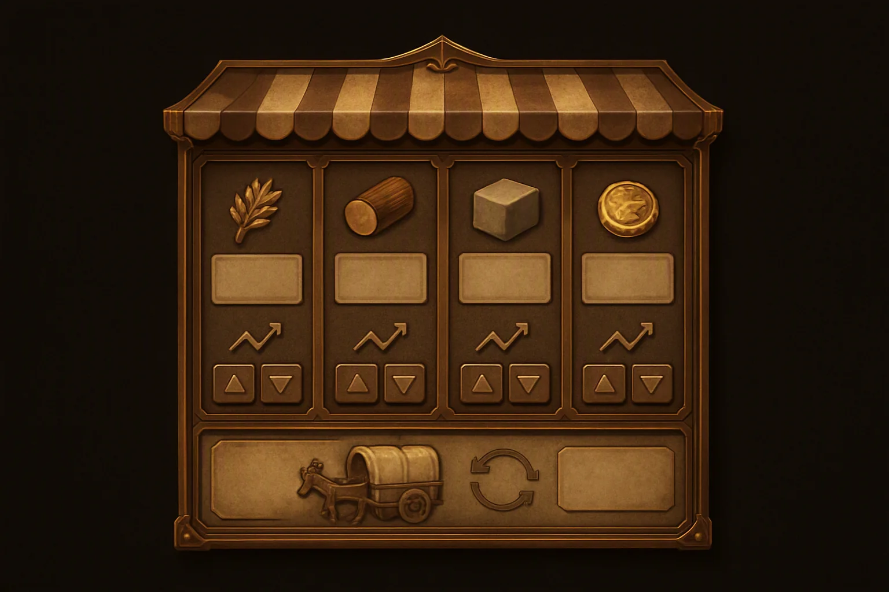
1
2
3
4
5
6
7
▲ 市場画面。左 3 列が交換に出す資源、右端が金。相場は買われた資源ほど高くなります。
- 食料・木材・石材 — 売れば金になり、金を払えば買えます。
- 金 — 交換の基準になる資源。エリートユニット・上位研究・火器はここが切れると止まります。
- 交換比率 — 全プレイヤー共通の相場。同じ資源を買い続けると値が上がるので、一気に買うほど損をします。
- 相場の推移 — 直近の値動き。相手が石材を買い漁っていれば「城か壁を建てている」と読めます。
- 売買ボタン — 100 単位ずつ。長押しで連続。
- 交易荷車 — 他国の市場との往復で金を得ます。距離が遠いほど儲かるので、遠い相手と繋ぐのが基本です。
- 交易先の選択 — 相手の市場を選びます。交易路が戦域に重なると荷車が狙われます。マリの固有令「交易」は戦域を維持するだけで金が入ります。
12. 前線ズーム（直接操作）FRONT LINE
令に任せず自分で手を入れるときの見え方です。令で回している戦域に直接操作を混ぜても構いません。
上手い人はカードの切り替えと直接操作を混ぜてさらに伸ばせる、という設計です。
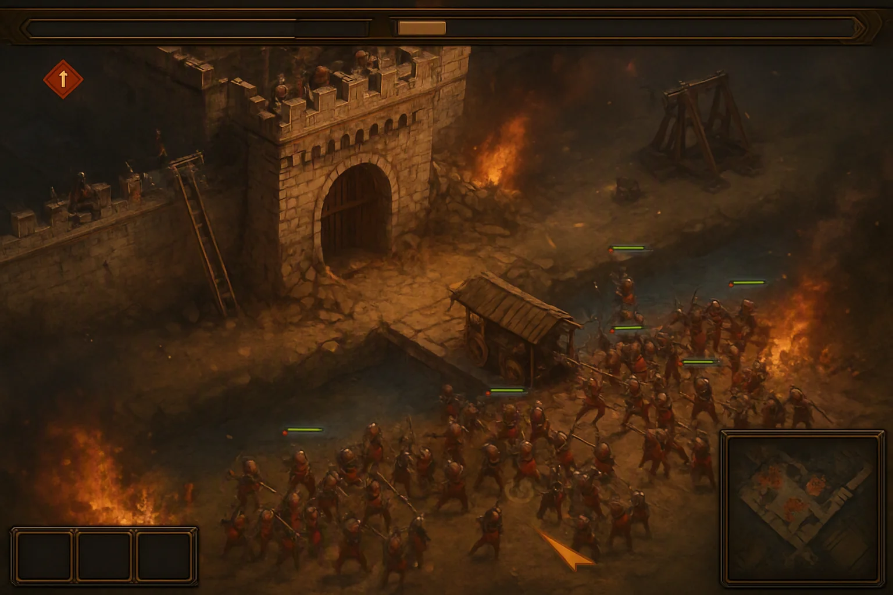
1
2
3
4
5
6
7
8
9
10
▲ 帝国の世の攻城戦。橋の前が必ず激戦地になります。
- 警告バッジ — 画面の縁に出ます。赤＝戦域が崩れかけ、橙＝村人が攻撃されている、黄＝人口上限。クリックでその場所へ飛びます。
- 資源バー — ズームしても位置は変わりません。
- 体力バー — ユニットの頭上。左端の小さな点が所属戦域の色で、令で動いている兵かどうかが分かります。
- 選択円 — 自分で選んだ部隊。選択した瞬間、その部隊は令から外れて手動になります。
- 指示マーカー — 手動で出した移動・攻撃先。数秒で消えます。
- 崩れた壁 — 一度空いた穴は、その試合の間ずっと通り道として残ります。
- 破城槌 — 単独では必ず死ぬので、歩兵の壁が前提。これを自動でやるのが「包囲」の令です。
- 投石機 — 壁に穴を空けられますが、射線に護衛がいないと真っ先に潰されます。
- 梯子 — 歩兵だけで壁を越えられますが、壁は壊れないので退くと元に戻ります。
- ミニマップ — ズーム中も他の戦域の輪が見えます。ここが点滅したら、俯瞰に戻る合図。
13. 結果画面RESULT
勝敗は 制圧・碑の写し・服属 の 3 通り。この世界に滅亡はないので、キャンペーンでは負けても次の話に続きます。
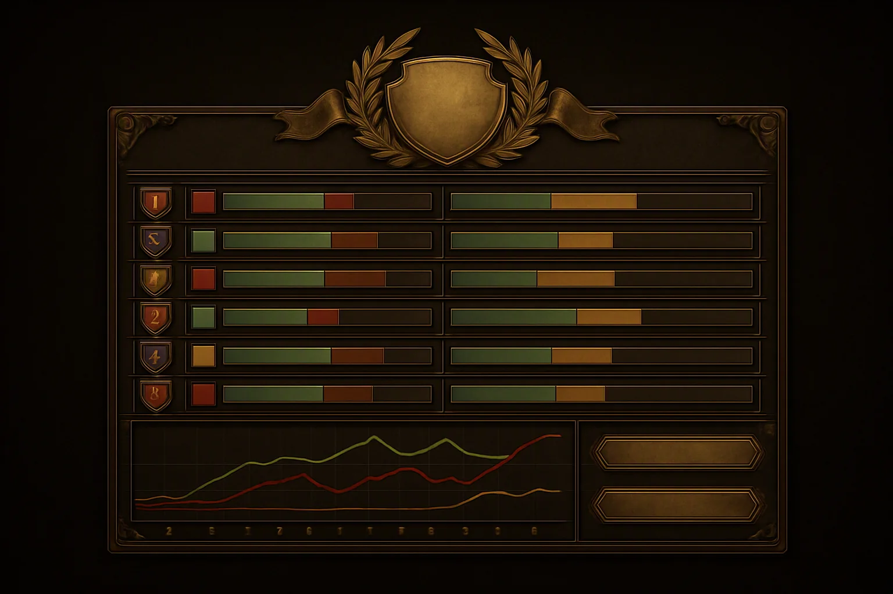
1
2
3
4
5
6
7
▲ 結果画面。数字より先に「どこで差がついたか」が形で分かるようにしています。
- 勝敗の紋章 — 勝った文明の紋章に月桂。服属で終わった場合は旗を巻いた図に変わります。
- 順位 — チーム戦ではチーム単位で並びます。
- 陣営色と紋章 — 試合中の色と同じ。振り返るときに戦域の色と突き合わせられます。
- 内政の内訳 — 採集した 4 資源の量を積み上げバーで。緑が長いほど内政偏重、短いほど早い攻めです。
- 戦闘の内訳 — 撃破・損失・建物破壊。令ごとの成績も内訳で出ます（どのカードで勝ったか）。
- 資源推移グラフ — 時間軸。線が離れた瞬間が勝負の分かれ目で、その時刻がリプレイの頭出しに使えます。
- 次へ — リプレイを見る／再戦する／キャンペーンの次の話へ。
14. リプレイ・観戦画面REPLAY & SPECTATE
全戦域の指令履歴が残ります。この画面の主役は盤面ではなく下半分のタイムラインで、
「どこで判断を間違えたか」を戦域単位で振り返るために作っています。
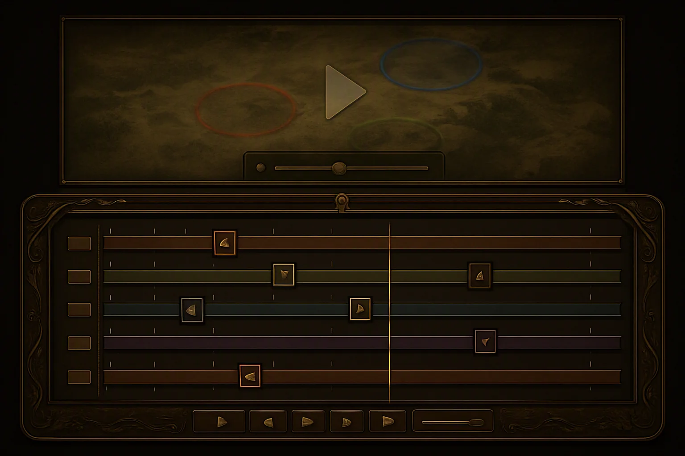
1
2
3
4
5
6
7
▲ リプレイ画面。レーン 1 本が戦域スロット 1 つに対応します（この試合では 5 つ立った）。
- 盤面 — 俯瞰で再生されます。観戦時は全プレイヤーの視界を見られます。
- 倍速スライダー — 0.5〜8 倍。
- 戦域レーン — 上から戦域 1〜6。レーンが伸びている時間 ＝ その戦域が立っていた時間です。
- 令の変更点 — レーン上に置かれたカード。ここをクリックすると、その令を出した瞬間から再生します。
- 令が届いた時刻 — カードの少し右にある薄い印。出した時刻と届いた時刻のずれが目で見えます。
- 再生ヘッド — 現在位置。全レーンを縦に貫くので、同時刻に他の戦域で何が起きていたかが分かります。
- 再生コントロール — 再生・一時停止・前後の令へジャンプ。
レーンを縦に見ると、負け方の型が見えます。1 本のレーンだけカードが何度も切り替わっているなら、
その戦域に手を取られて他を放置していた、ということです。
15. 色とアイコンの共通ルールCOMMON RULES
全画面で意味が変わらないように、色と記号の役割を固定しています。
| 見えるもの | 意味 | 出る場所 |
|---|
| 戦域の色 |
戦域 1〜6 を識別する色。陣営色とは別系統で、ミニマップの輪・部隊の足元・スロットの旗・リプレイのレーンで一貫します。 |
対戦画面／俯瞰／リプレイ |
| 緑のバー |
体力。建物では修理と建設の進捗も兼ねます。 |
ユニット頭上／選択パネル |
| 赤いバッジ |
戦域が崩れかけている警告。放置すると点滅が速くなります。 |
画面の縁／スロット |
| 金の縁 |
「今これができる／これが選ばれている」。研究可能・選択中のカード・準備完了。 |
全画面 |
| 暗いボタン・錠 |
できないこと。理由は 時代不足／資源不足／その文明が持てない の 3 種で、カーソルを乗せると出ます。 |
コマンドグリッド／研究 |
| 点線 |
まだ届いていない令。実線になった時点で戦域が動き出します。 |
戦域指令ビュー |
| 地形の暗がり |
視界がない場所。表示されているのは以前見た情報で、今そこに何がいるかは分かりません。 |
対戦画面／ミニマップ |
画面ごとの目的、ひとことで
資源（上端左）
次に何を作れるか。序盤 5 分の配分が 20 分後の兵力差になります。
戦域スロット（右端）
今どこで戦っているか。ここが埋まるほど、判断の量が増えます。
コマンド（下端）
今選んでいる物に何ができるか。選択対象で丸ごと入れ替わります。
俯瞰（キー切り替え）
どこを捨て、どこに増援を送るか。クリック数ではなく判断で勝敗が決まる場所です。
※ 掲載している画面イメージはコンセプトを示すためのもので、実装中の画面とは異なります。
画面内の文字はイメージ画像のため省略しており、実際の画面には日本語のラベルが入ります。
キー割り当てと具体的な操作手順は 操作方法資料 で扱います。